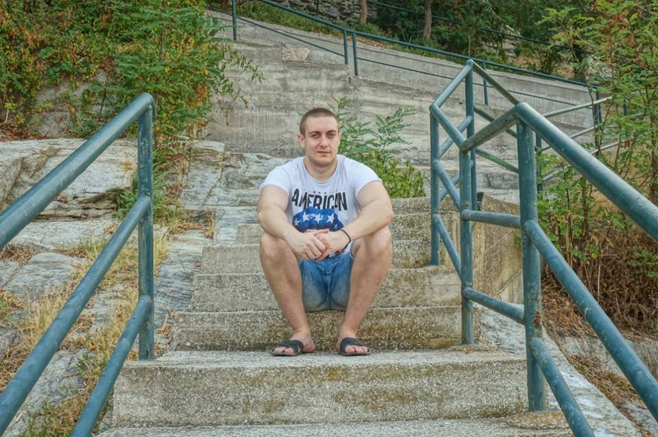
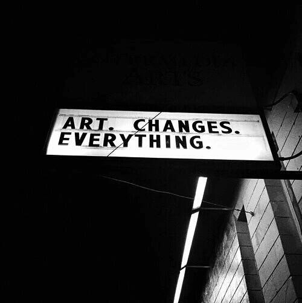

Представяне
Име: Ивайло Валентинов Пенев
Професия: Tier 2 Technical Support
Мото: "Carpe diem"
Резюме
През 2009 година завършвам Гимназия за чужди езици "Екзарх Йосиф I", гр Ловеч с профил немски език. Същата година съм успешно приет в Юридически факултет на СУ "Св. Климент Охридски", специалност право. Понастоящем съм семестриално завършил, като ми остава да положа успешно последния държавен изпит по Гражданскоправни науки, за да се дипломирам успешно. Притежавам езиков сертификат C1 Deutsche Sprachdiplom. В момента работят като Tier 2 Technical Support към McAfee Project в Sutherland Global Services. Кариерата ми там стартира през април 2012, като агент консултант в немския екип. През април 2016 печеля конкурс за по-висока позиция, а именно настоящата. Имам интереси в областта на програмирането, unix-based systems, front-end, web design. Предишните ми работи в периода до 2012 са свързани с дейности от сферата на обслужването - барман, сервитьор, готвач. Към днешна дата имам амбиции да се развивам като front-end разработчик, поради желанието ми да създавам и развивам естетически издържани продукти, в които мога да имплементирам нещо уникално и дизайнерско.
Портфолио

"Търсейки светлината в тунела, ние често преоткриваме мрака.. Опитвайки се да загърбим вътрешната си неудовлетвореност, ние достигаме до измеренията на онова мнимо щастие, което ни изпълва с кух ентусиазъм и празни надежди.. Заслепени от опаковката, за нас трепетите на душата остават глухи.. Водени от предразсъдъците си, ние неимоверно подминаваме стойностното, това, което би ни направило истински щастливи.. Съжаляваме за пропуснатите шансове и носим тази горчивина до края на дните си, заблуждавайки се, че сме ги преживели.. а те остават там, дълбоко потиснати и тлеещи.. Водени от желанието си за промяна, ние не се стремим да променим себе си, а света около нас.. и разочарованията не закъсняват.. Сблъсквайки се с непреодолимите перипети на нашата индивидуалност, ние отново и отново поглеждаме в миналото, търсим причините за несполуките си и откриваме в хубавите спомени единствено тъга и носталгия.. Търсейки смисъла, често откриваме истинските измерения на безсмислието, фалша, лицемерието.. Често вторият шанс е нищо повече от жест на куртоазия, подхвърлена надежда, обезпечена от съжаление и лишена от стойност.. Губейки пътеводните си ориентири,ние губим не посоката,а стремежите си.. Неспособни да разберем другите ние сами оставаме неразбрани, оковани от собствените си предразсъдъци, заслепени от наивността си.. Убеждавайки човека до себе си в пълнокръвието на нашите чувства, ние откриваме всъщност колко безчувствени сме станали. Търсейки вярата, често намираме примирението.. Лутайки се в житейските бури ние откриваме не смисъла, а безсмислието на това да бъдем човечни.. да бъдем искрени.. да бъдем хора.." - И.П.
Контакти
| Email: | ivaylo.v.penev@gmail.com |
|---|---|
| Телефон | 0883457549 |
| Ивайло Пенев |